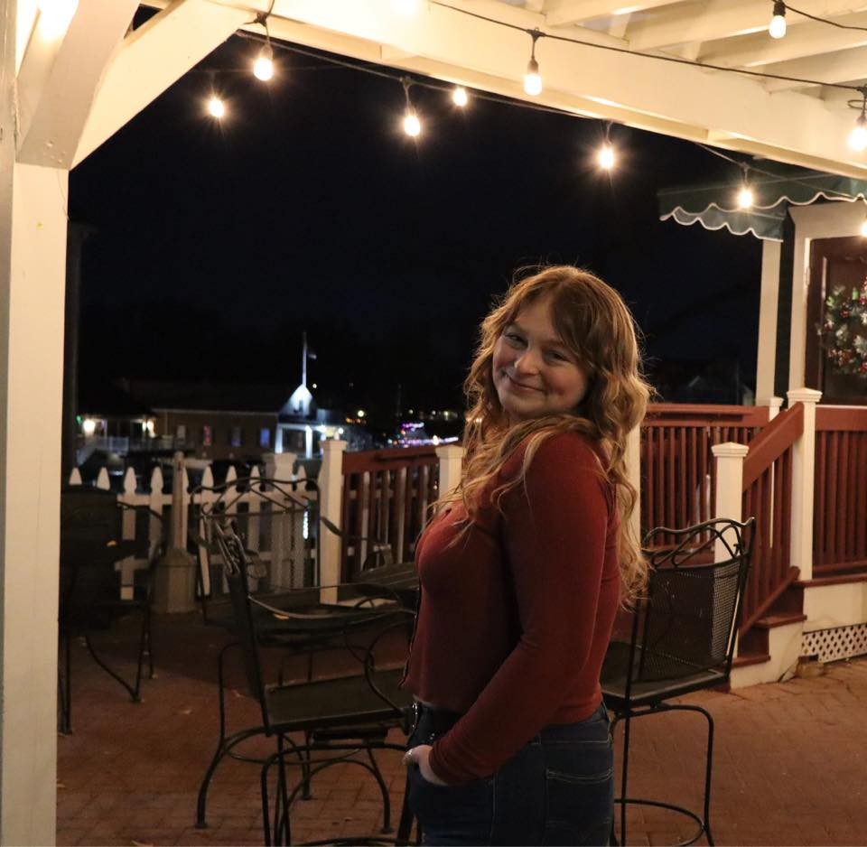

 Hi, my name is Audra, and I'm currently enrolled in a certificate program at the Community College of Rhode Island. This web design course was a requirement for my program, but I’m so glad I took it — I ended up really enjoying it and discovering a genuine interest in web development. This portfolio showcases the projects I’ve worked on and the skills I’ve developed throughout the course.
Before diving into web design, I was an English major with a lifelong passion for creative writing. Writing stories and dreaming of publishing books has always been a huge part of who I am. While I still plan to pursue that goal, I know writing doesn’t always pay the bills — which is why I’m excited to have found another creative outlet through web development.
My interest in technology started when I worked in the tech department at Staples. I helped customers troubleshoot issues and even replaced internal components in their computers, which sparked my curiosity about how things work behind the screen. Who knows — maybe one day I’ll bring both of my passions together by building a website to promote the books I write!